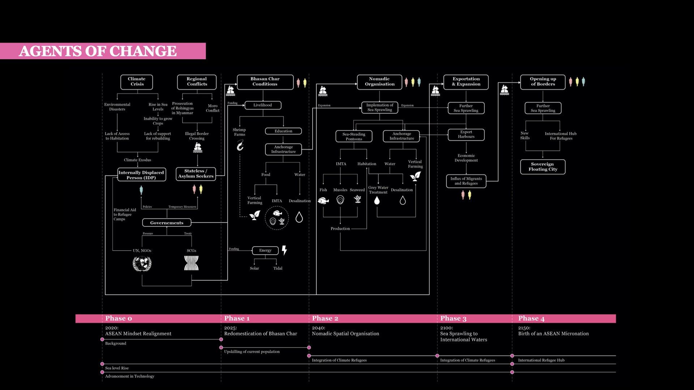
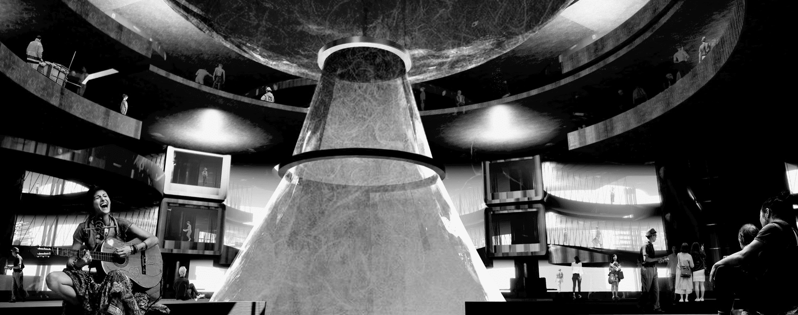

The Marine Collective: From Exile to Genetic Nomadism
Abstract
Thesis Mentors: Prof. Eva Castro, Prof. Federico RubertoAs sea levels continue to rise higher with each passing day, large populations residing in coastal communities around the world will soon be turned into climate migrants, in search of a new space to inhabit. This forces the world to face the inevitable question - where will these people go?
This thesis delves into questions on the state of the forcibly displaced, proposing the migration towards the uncharted frontiers of the ocean, using it as a suitable incubator for the development of a self-sustaining micronation.
Utilising tools such as fiction, infrastructure and integrated hybrid systems, the objective of this project is to reimagine the creation of a new socio-ecological reality for these margainalised communities. Exploring the idea of embracing nomadism in order to better adapt to this new way of life on the sea, it also allows the target demographic to ease their transition from a state of extreme subjugation into a state of pure freedom.
About Me
Ryan Teo is a Master's Student at the Singapore University of Technology and Design (SUTD), pursuing his Masters of Architecture. He graduated Magna Cum Laude from SUTD with a B.Sc in Architecture and Sustainable Design.An aspiring architect and designer, armed with an appetite for exploration and innovation. Ryan has diverse interests such as architecture, photography, music and sports. His passion lies in the exploration of creative mediums which enables and fosters human centric engagement and the regeneration of urban environments.
Ryan is interested in the crafting and utilisation of computational tools to aid the design process, as well the use of VR and AR technology to push the boundaries of how we can digest these new environments from a different prespective. He is excited to explore new ways in which art, technology and design could coexist to empower communities and impact our environment positively.
Name
Ryan Teo Jun Yan
Mentor
Eva Castro
Typology
Speculative Futures/Fictions, Sustainable Oceanic Habitation, Inhabitating the Anthropocene, Micro-Macro Strategies, Landscape Urbanism
Site Location
Bangladesh, South East Asia

![]()
![]()
![]()

Identification of a Suitable Localised Condition
In order to narrow down the project into an eventual site in the ASEAN region, various indexical drawings were done.The following indexes were plotted: the regional conflicts in the area, the vulnerability to sea level rise, the migrational patterns of refugees in the region. After overlaying all the indexes together, the individual factors were assigned a weightage, which led to the eventual generation of an atlas of 5 potential sites.
Looking at the sites, I have narrowed it down further to the chars in Bangladesh. As it synthesises all the necessary elements, with refugees in that region dealing with an uncertain future as well as them already dabbling with a move to the ocean.
Thesis Narrative
Phase 0: Exisiting State of Affairs (2020)
With the projected increased in the population of the forcibly displaced in the near future, coupled with the climate exodus, ASEAN's mindset of non-interference has to be realigned. This creates a senario that has now have to be confronted.Phase I: Redomestication of Bhasan Char (2025)
The focus at this stage would be on preparation of the current population for life on the chars. This is achieved through the redomestication of the Bhasan Char itself.Through the reinvention of its existing infrastructure as well as the upskilling of the Rohingya refugee population, preparing them for the eventual flooding of the island.
Phase II: Nomadic Spatial Organisation (2080)
The priority shifts to that of survival, the generation of sufficient resources in order to make it possible to sustain the community on the sea. Hence, the creation of a productive machine will be realised.Phase III: Sea Sprawl Expansion (2100)
It is assumed that productivity reaches an all time high with the system possessing the ability to produce a sufficient amount of resources to accommodate the ever growing collective. It is at this period where the collective would be able to afford allocating resources to create more social commons, as well as begin to export some of its surplus products to generate income for itself.Phase IV: Birth of a sovereign ASEAN Micronation (2150)
This is where the birth of a sovereign ASEAN micro nation materialises. With a continuous sprawl into international waters, refugees from all over the world can start migrating from other host nations. This opens up the possibility as well for the potential creation of other inception points for the collective around the world as well.In the Collective, work is a force which aids in the dignification of existence. Through work, refugees are able to construct their new identity. By first looking at existing typologies of production, and then hybridising them, we are able to form new potentialities for the inhabitants to be able to foster and cultivate this new identity for themselves.

IMTA: Engine of the Living Machine
The main productive engine of the machine adopted for the Collective is Integrated multi tropic aquaculture (IMTA).Making use of a system of intertropic transfer of resources, it creates a mini ecosystem where resources are maximised and utilised through the use of waste materials of larger organisms to small ones.
Bhasan Char: A Refugee Camp Condition
The habitation condition on the Bhasan Char follows the typical spatial planning logic of refugee camp. The main issue is the rigidity of chosen habitation scheme.The designers of this developments tends to operate with the assumption that incoming inhabitants are all able to be forced into a one size fits all policy, with every room or living block provided already predetermined, this calls for the need of a more versatile and viable housing situation.
A Sustainable Water Ecosystem
Another fundemental element for the collective is the provision of fresh water, as such I have looked into the process of grey water purification, which could be used in conjunction with the more traditional means of rain water collection.The three fundemental drivers of the Collective's Nomadic Ecosystem have been identified as Productivity, Habitation and Water.

IMTA: the Engine of the Productive Machine
The following are the base units designed for aquaculture, mussell farming and macroalgae, ranging from modules designed for productivity to those for data collection, processing and exporting.WASP was also implemented in order to generate configurations by stochastically agglomorating them radially and linearly, whilst maintaining a built in compositional hierarchy of how the productive system itself has to be run.
Collective Habitational Ownership
As stated previously of the main pitfall of current habitation conditions of refugee camps could be attributed to the rigidity of the scheme.As such the design adpted had to have a degree of variability, catering to a wider range of demographics of potential individuals (ranging from that of a single refugee, to a family unit of 3-6 ppl or even an orphanage)
This new habitation proposal allows for more flexibility and the potential for growth and expansion.
A Sustainable Water Ecosystem
Designed in synergy with the inhabitation modules, an embedded system was designed for the grey water module to have the capacity to collect and store the greywater for every cluster of 6 inhabitation units.The water will then be collected by ship and sent to the Anchorage Module, which has the sole purpose of water treatment, collection and distribution.
Deconstructing the Construction Process
The fundamental elements of the system consist of a floating pontoon base module, the scaffolding wireframe as well as amenities such as the lift core and external platforms. At the early onset, the structure of the system will be first established, keeping the lower most floor completely void as a rule. Then as the system matures with more modules starting to get layered on top of one another, the initial base inhabitation units would begin to be inserted.As time passes however, the inhabitants would naturally gain the desire to expand their living quarters. For instance, it they were to elect starting a family or to move in with another member of the collective, they would have the opportunity to do so as the units are designed to be configurable and combine with other units, which will allow for connections throughout the entire grid structure.

Growth within the Fractal
The following animations would detail how the prototypical modules introduced would be laid out and grown in the second and third phases of the narrative.Also included are the seasonal ecological cycles of the Collective which would inform how the system would reconfigure throughout the year in order to maximise productivity output.
A closer look into the Collective...

Anchorage Module: Arrival Area
At the heart of every cluster of the Collective lies the Anchorage Module. With a population as transient as the Collective's, their needs tend to fluctuate greatly overtime.Adpatability has therefore become essiential for its survival.
Anchorage Module: Upper Level
The upper levels of the Anchorage Module would serve as informal social commons. Water in this case becomes the unifying entity which aims to cultivate a shared identity.Anchorage Module: Vertical Farming
Utilising the greywater output from the various inhabitation areas, the water is deposited and pumped through the pipes and into the hyproponics component of the ecosystem.The Living Machine: Aquaculture
Another intergral part of the Collective's ecosystem is the Productive Machine, serving as the engine which sustains the food storages of the Collective.Aquaculture is harvested here in the first compinent of the IMTA chain. After many years of research and development, harvesting and rearing practices are eventually optimised.
The Living Machine - Inhabitation
As the Collective reaches its maturation stage, a surplus of resources will begin to be generated, exceeding its minimal requirements for survival, creating potential opportunities for trade.Over the generations, the work put in to sustain the Collectve has given its inhabitants both a shared purpose and identity, cultivating a culture which has become rooted in their DNA.
The Inhabitation Condition
Integrated with all the other components of the ecosystem lies the inhabitation modules. Designed as a seperate kit of parts, it aims to interface seamlessly with the rest of the ecosystem.The inhabitation structure becomes a canvas with which its inhabitants would be able to exercise their own agency and program the unplanned spaces accrording to their specfic desires.